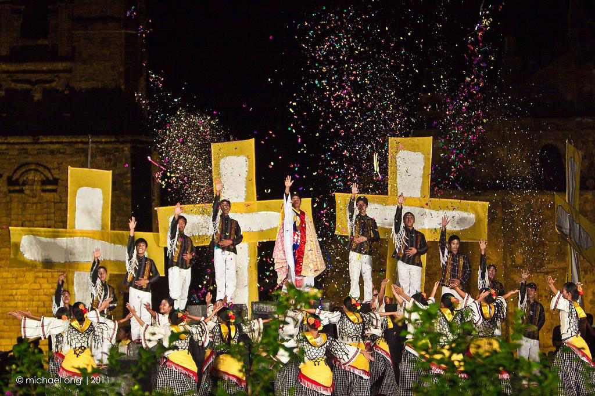

|  | Guling-Guling is a traditional festival, implemented by Spanish monks at the beginning of the 16th century. It is celebrated in Paoay, Ilocos Norte the Tuesday before the Ash Wednesday—the last day for merrymaking before the start of the Lenten season. The celebration starts with a ritual called “Guling.” This word can be translated as “mark” or “sign.” In the old days, the mayor of the town smeared people’s foreheads with a white cross made of wet rice flour. |